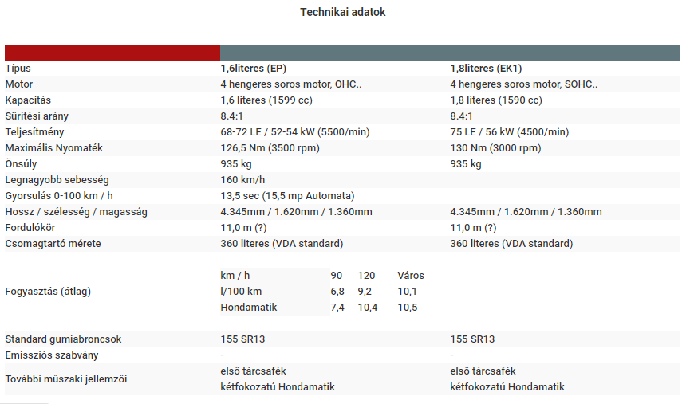

A Honda Accord máig az egyik legsikeresebb családi utazó autó a Honda kínálatában. Története 1976-ra nyúlik vissza, mikor is bemutatták az első generációt. 1989 óta az egyik legkelendőbb autó az USA területén. Mára már a 9. generációt gyártják, és népszerűsége töretlen, megbízhatóságának, és teljesítményének köszönhetően. Megbízhatóságát tekintve, a világ egyik legjobb gépjárműve. Lássuk tehát a fejlődését, és műszaki paramétereit, miként is lett népszerű.
Az első és a tizedik generáció között pontosan 40 év van. És jöjjön az összehasonlítás:
Ez volt az első Honda Accord mely legördült a szerelősorról. A gyártás először egy 3ajtós autóval indult, majd körülbelül rá egy évre megszületett a szedán változata is. Honda ezt a modellt is CVCC motorral szerelte. Ennek lényege az volt, hogy feltétel nélkül megfeleljen az USA szigorú környezetvédelmi normáinak. Legnépszerűbb motor a kínálatban az 1.6 literes benzines motor volt. Ez az Accord jól fogyott köszönhetően nem túl nagy méretének, és üzemanyag takarékosságának. Ez volt az első olyan Japán autó, mely rendelkezett szakaszos ablaktörlővel, választható kárpitozással, és fordulatszámmérővel. Az LX kivitelben debütált a klíma és a szervokormány. 1980-ban a két sebességes automata váltót felváltotta a 3 sebességes. Ugyanekkor az 1.8literes motor is elérhetővé vált, valamint a 3ajtós kivitel is megkapta az előre hozott visszapillantó tükröket. Ugyanakkor a műszerfalon is érezhető volt egy frissítés. Az alapfelszereltség akkoriban gazdagnak mondható, tartalmazta a rádiót, fordulatszámmérőt, első tárcsafékeket, Szervós kormánymű stb... Az EX változatban nem volt viszont antenna, szervo kormány, stb... Sok a közös az 1980-ban bemutatott Honda Quintet-el, hisz azonos műszaki alapokra épültek. 1981-es SE modellben jelent meg elsőként az elektromos ablakok, valamint a borjúbőr ülések.
